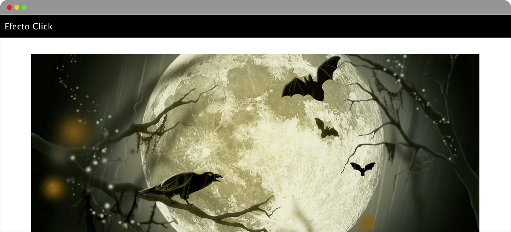
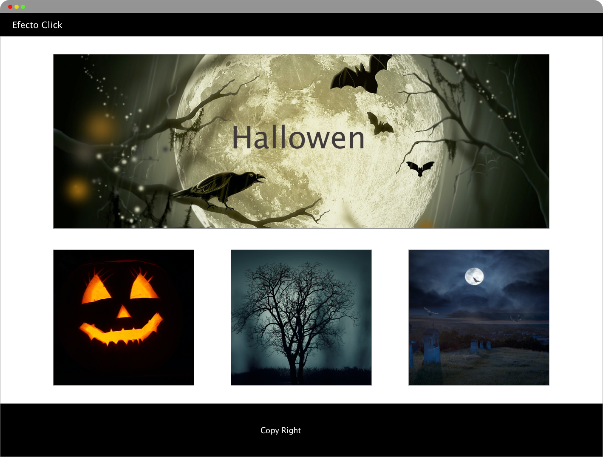

Desarrollo Web
Primera face
Es el diseño, la parte mas importante antes de crear una pagina web, consta de una entrevista, para tener los requerimientos adecuados, que tienen que ser diseñados en un boceto, y testeado, mas conocido como un estudio de UX.

Segunda face
Es la arquictectura web esta dentro del UX, donde se define la información y las imagenes, así la comodidad del usuario final.

Tercera face
En esta face se coloca los colores,imagenes, fuente de le letra.

Cuarta face
Una vez aprobado el diseño se empienza la codificacion de la web mas conocido como maquetacion de la web

Quinta face
Testear, probar la pagina web hasta que este funcionando correctamente.
Sexta face
Publicar la pagina web y agendar su mantenimiento.
